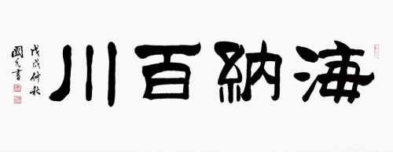
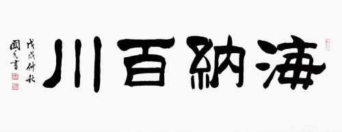
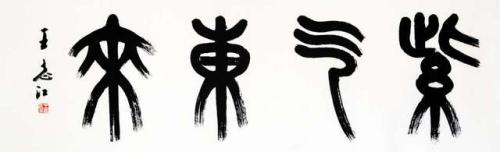
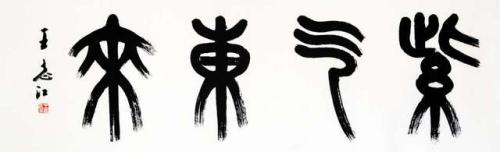

毛笔字是指按传统法度书写的字，而不是用毛笔随意写出的字。 书法是线条造型艺术。所谓毛笔笔法主要的就是怎样创造理想线条的用笔方法。 毛笔作为一种书写工具，其历史非常久远，早在新石器时代的彩陶上就留有毛笔描绘的痕迹。虽然西周以前迄 今尚未见有毛笔的实物，但从史前的彩陶花纹、商代的甲骨文等上可觅到些许用笔的迹象。东周的竹木简、缣 帛上已广泛使用毛笔来书写。由此可知毛笔起于殷商之前。最早的毛笔，大约可追溯到二千多年之前。湖北省 随州市擂鼓墩曾侯乙墓发现了春秋时期的毛笔，该笔是目前发现最早的笔，是上古时代遗存的不可多得的宝贵 资料。春秋、战国时对笔的叫法各地不一，有“笔”、“聿”、“拂”等多种名称。直到秦实行“书同文，车 同轨”，才将笔的各种名称统一称作“笔”。相传秦将蒙恬曾在善琏村取羊毫制笔，在当地被人们奉为笔祖。 又据说蒙恬的夫人卜香莲也精通制笔技艺，被供为笔娘娘。到了汉代，笔已比较考究，路卮是当时的制笔高手。 汉代制笔头的原料除了兔毛之外，还有羊毛，鹿毛、狸毛、狼毛等，硬毫软毫并用。同时，笔管的质地和装饰 也丰富起来。据正史书籍记载，我国著名的宣笔就发明于汉代。
楷书展
隶书展
 

篆书展
 

行书展
草书展